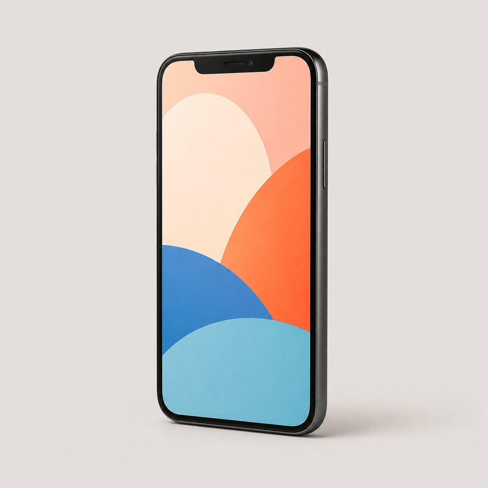
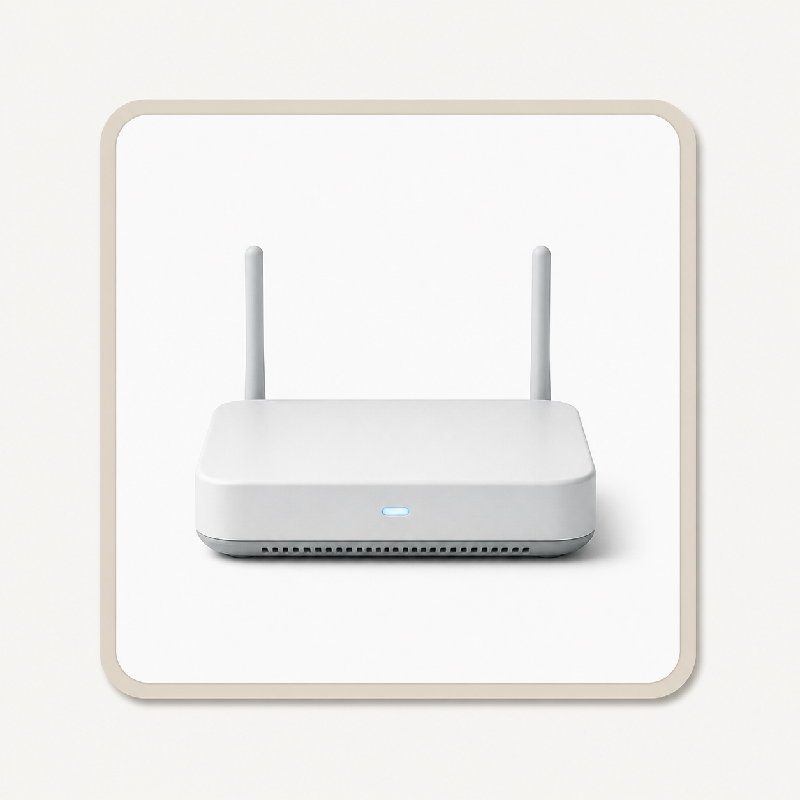
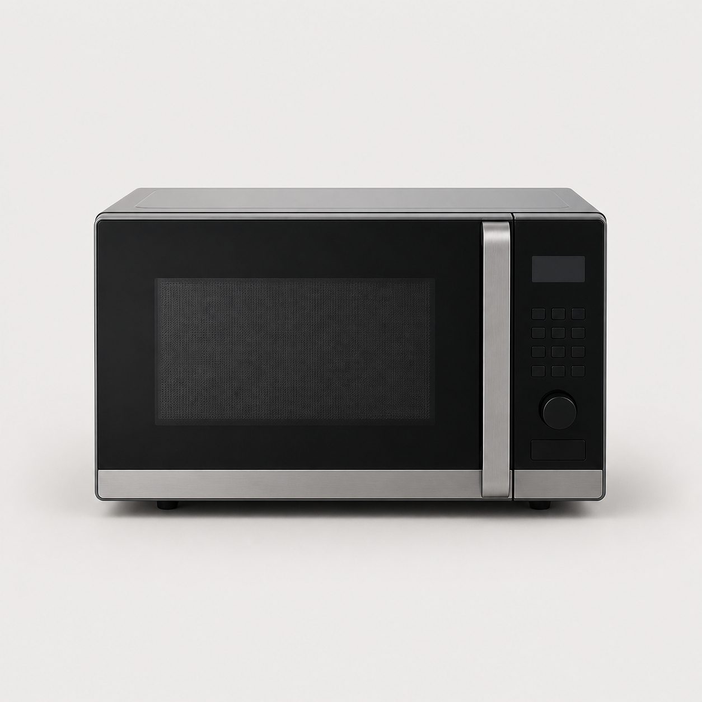
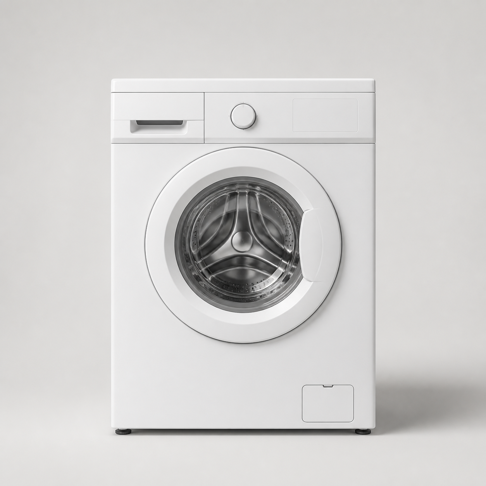

How to play
Image first, language next
1Choose two hidden cards.
2Match the image with its name and function.
3Say the model; the teacher awards the point.
Practice Lab · Unit 3 · Activity 02
Match each device image with its name and function. Listen to the professional model, then say what the device is used for before the teacher awards the point.




How to play